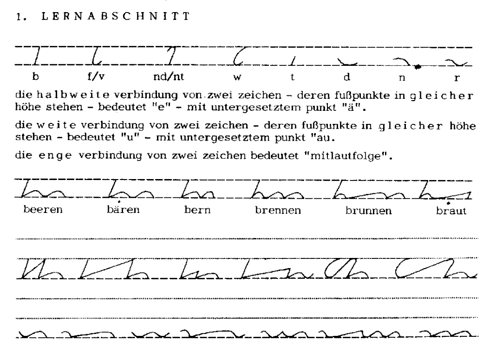

International
InternationalStiefografie jako tajemne pismo
2011-06-28 | autor: flamenco108W dzisiejszym odcinku fascynujących przygód stenografii zaprezentujemy system Stiefografie autorstwa Helmuta Stiefa.
Helmut Stief urodził się na początku XXw., ukończył następnie szkoły, do jakich posłali go rodzice. W tym czasie po mistrzowsku opanował system DEK (pisał z prędkością nawet 440 sylab na minutę). Wreszcie wszedł w rodzinny biznes - meblarstwo. Jednak nie odnalazł w tym zawodzie swojego przeznaczenia i wkrótce przerzucił się na dziennikarstwo i nauczanie stenografii, czym zajmował się, aż powołano go do Wehrmachtu w 1943 roku. Z powodu znakomitej znajomości szybkopisania nie powąchał prochu, lecz pracował za biurkiem.
Po wojnie zatrudniono go jako rzecznika prasowego sejmu Turyngii, a
wkrótce został jego dyrektorem. W 1948 roku sowieckie władze okupacyjne
oskarżyły Helmuta Stiefa o szpiegostwo i inne zbrodnie, w efekcie wyrok
sumarycznie opiewał na 130 lat więzienia. Odsiedział z tego 8,5 roku w
Bautzen, gdzie wreszcie miał czas przenieść na papier (po serze,
własnoręcznie wykonanym z drewna piórem) swoje przemyślenia dot.
stenografii. Stworzył swój system i nauczył go 200 spośród
współwięźniów, którzy zaczęli się tym posługiwać jak tajnym pismem.
Możliwe to było dzięki niezwykłej prostocie systemu. Na podstawowym
poziomie składał się on z zaledwie 25 znaków (DEK ma ponad 60) i 9
podstawowych reguł (wzrosło do 12). Opanowanie podstaw wymagało kilku
godzin koncentracji, a czasu więźniowie mieli sporo.

Po wyjściu z więzienia w 1956 roku niezwłocznie wyjechał do Frankfurtu nad Menem, gdzie został stenografem parlamentarnym w parlamencie Bawarii. W tym czasie zajmował się rozwojem i propagowaniem swojego systemu. W efekcie w roku 1966 narodził się nowy system stenograficzny pod nazwą Stiefografie, którego popularność w momencie śmierci autora w roku 1977 przekroczyła 40 tysięcy adeptów. System ten jest wciąż nauczany korespondencyjnie.
2011-06-28 autor: flamenco108